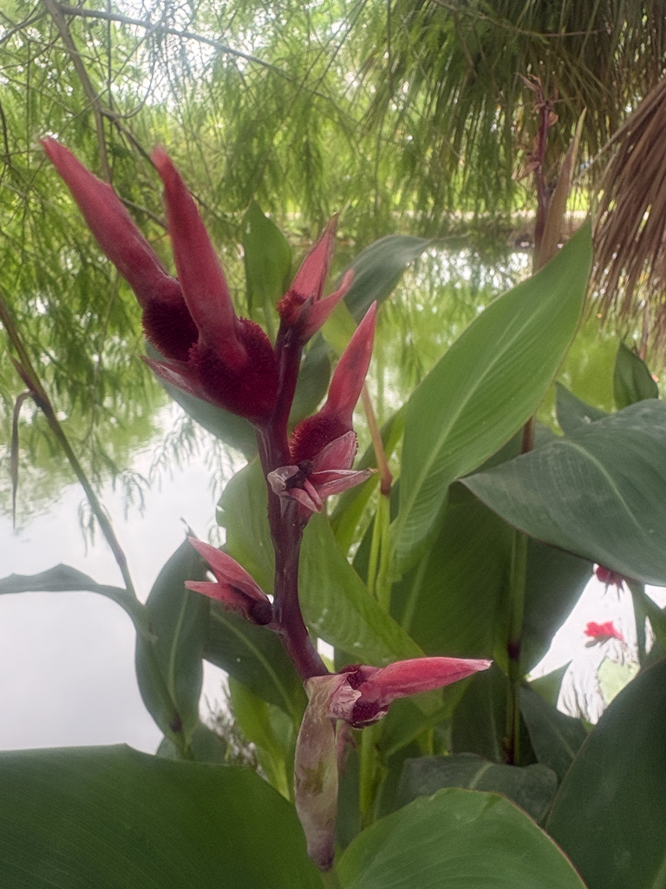

- Despite the name, Canna Lilies are not lilies at all — they're the showy tropical relatives of bananas and gingers.
- The hard, round seeds are so dense they were once loaded into shotguns as improvised pellets — which is how the plant earned its old name, 'Indian Shot.'
- For years these non-native cannas grew hidden among the heliconia by the office — close enough in looks that nobody noticed they weren't heliconia at all, until a trained eye spotted the difference.
- They spread so readily by rhizome that volunteers now dig the young cannas out of the heliconia and move them to open ground in the canna area next door.
Native to the tropical and subtropical Americas, from Mexico through Central America into South America. Canna × generalis is the wild species behind most ornamental garden cannas.
It was one of the first New World ornamentals traded globally, reaching Europe and Asia centuries ago — and the species name indica ('of India') is a historical mix-up, a relic of the old confusion between the East and West Indies.
- The Canna Lily is a plant of cheerful contradictions. It isn't a lily — it belongs to its own family, Cannaceae, in the same order as bananas, gingers, and the bird of paradise — and its scientific name points to the wrong side of the world.
- Early European botanists, tangled in the centuries-old confusion between the East and West Indies, named the American plant indica, 'of India.' The name stuck even after the error was understood.
- At Palma Sola, these non-native cannas come with a hide-and-seek story. For years they grew quietly mixed in among the heliconia by the office — broad paddle leaves close enough to heliconia's that, to the untrained eye, nobody realized there were cannas in there at all.
- Once you learn the difference it's obvious, and watching a visitor suddenly 'see' the canna they'd been walking past is one of the small pleasures of the bed.
- The plants also weathered a hurricane. A canna planting by Cypress Pond was hit hard when storm flooding put that corner of western Bradenton under a foot of saltwater, and cannas — with their low salt tolerance — struggled there afterward.
- Today the park keeps the two kinds sorted: the non-native cannas here by the office, and the Florida-native Golden Canna (Canna flaccida) re-established over by Cypress Pond.
- That sorting is an ongoing teaching moment. Because canna spreads aggressively by rhizome and keeps popping up among the heliconia, our high school volunteers learn to tell the two plants apart and to lift the wandering canna rhizomes carefully — intact, by the rhizome — and transplant them to open ground in the canna area next door, which is filling back in week by week.
- Beyond the garden, this is a plant of real human history. Its rhizomes are edible and starchy — grown as a food crop called Queensland arrowroot in parts of Australia and Southeast Asia — and the famously hard seeds have served as beads, as a coffee substitute, and as genuine shotgun pellets.
- Those seeds are also remarkably long-lived; Canna seeds recovered from old archaeological contexts have germinated after centuries of dormancy.
Canna Lilies are hummingbird and butterfly plants. The bright red, orange, or yellow flowers are rich in nectar and shaped for hummingbirds, which are primary visitors, while bees and butterflies work them as well. Canna leaves serve as a larval host and shelter for the Brazilian (or Canna) skipper, whose caterpillars roll a leaf into a protective tube around themselves.
The dense clumping foliage gives cover to small wildlife at the water's edge, and at Palma Sola the canna-and-heliconia bed by the office reads as one continuous block of tropical nectar and shelter through much of the year.
Spreads readily by underground rhizomes, forming expanding clumps; also reproduces by seed. Easiest to propagate by dividing the rhizomes — which is exactly how the park relocates volunteers that pop up among the heliconia.
Showy red, orange, or yellow blooms in terminal clusters, spring through fall. The colorful 'petals' are actually modified stamens (staminodes). Pollinated chiefly by hummingbirds, with bees and butterflies visiting.
Spiky, warty capsules that split to release hard, round, BB-like black seeds — the 'Indian shot.'
Large, broad, paddle-shaped, alternate, in green, bronze, or purple depending on cultivar — superficially similar to heliconia and banana foliage, which is exactly why they go unnoticed mixed into a heliconia bed.
Canna leaves spiral around an upright stem and the plant arises from a knobby underground rhizome; heliconia leaves tend to fan in a flatter plane from a more clumping base. Up close the difference is clear — the skill our student volunteers are taught.
Bold upright clumps of broad tropical leaves topped with vivid red-orange-yellow flower spikes. By the office, play spot-the-canna: see if you can pick out the cannas tucked in among the heliconia before reading the leaf tips.
Look for hummingbirds working the blooms and for rolled-up leaf tubes that signal Canna skipper caterpillars inside, plus the newly transplanted clumps filling in the canna area next door.
This is a genuine food plant — the starchy rhizomes are grown as a crop ('Queensland arrowroot') in parts of Australia and Southeast Asia, and the seeds have served as a coffee substitute.
It has no known toxicity to people and isn't listed as toxic to dogs.
PARK CONTEXT (confirmed): Non-native ornamental cannas. The only NATIVE cannas at the park are Canna flaccida introduced in 2023 by Cypress Pond (see Golden Canna, PSBP-00034) — everything else is non-native C. indica. These non-native cannas grew for years unnoticed among the heliconia by the office (looked close enough that nobody realized they were cannas).
Now deliberately separated: non-native by the office, native by Cypress Pond. A Cypress Pond canna planting was hit by ~1 ft saltwater flooding from a 2024 hurricane; cannas struggled there afterward. High school volunteers are taught to distinguish canna from heliconia and to lift/transplant wandering canna rhizomes intact to the adjacent canna area (flushing back week by week).


- © Maria Escobar (CC-BY-NC), via iNaturalist
- © Randall Carter (CC-BY-NC), via iNaturalist